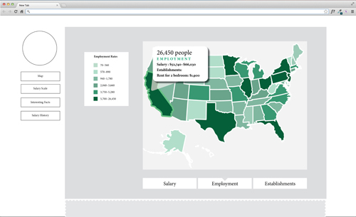
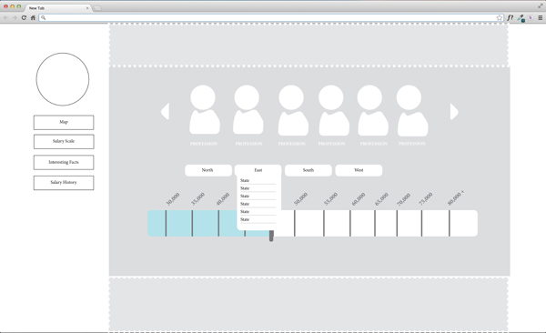
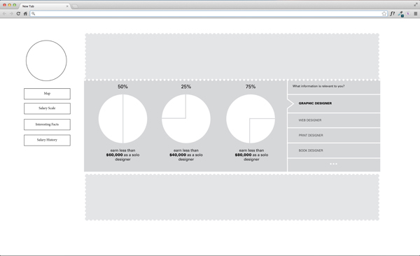
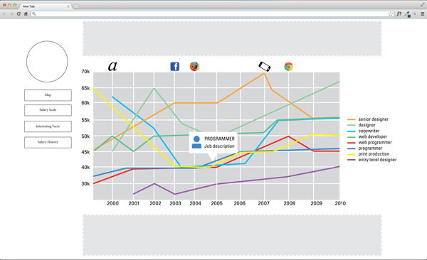

Hi! I'm Leah

A little about me:
I really love to cook!
I'm a junior in GD
Sketches
- My website is going to be an interactive info-graphic site. The site wil
l include a map of the USA that will allow the user to know where
the best places for Graphic Designers are. There are three separate categories,
employment,salary, and number of establishments When Scrolling over the objects
or by clicking them the user is able to find out information about that state.
Below that is another way of viewing the salary data. Different icons will
change the way the slide by goes. Another way to interact with the sidebar will
allow the user the chance to choose the region that they are most interested in.
The section after that is a fact producer, including various facts about different
areas in graphic design. Finally, a line graph showing how graphic design salaries
have changed over the years for graphic designers.Also this will include events that
have influenced the rise and fall of certain professions.
- 
- 
- 
- 